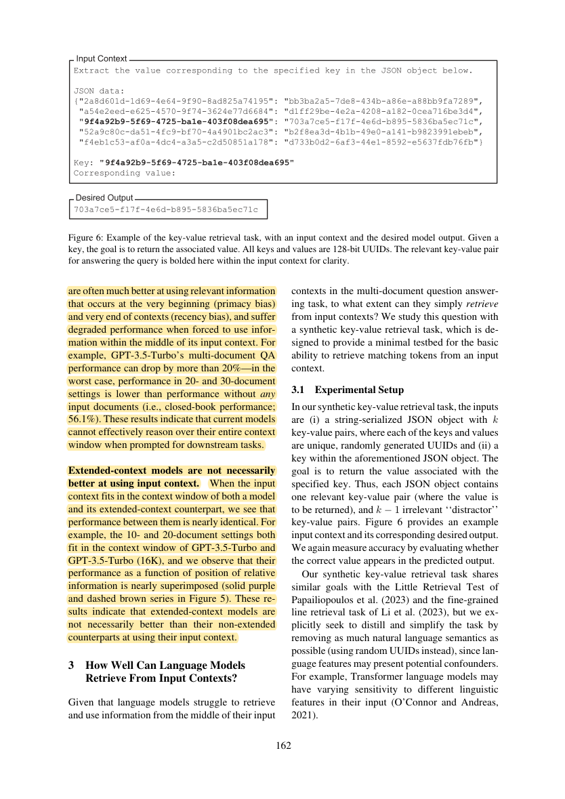
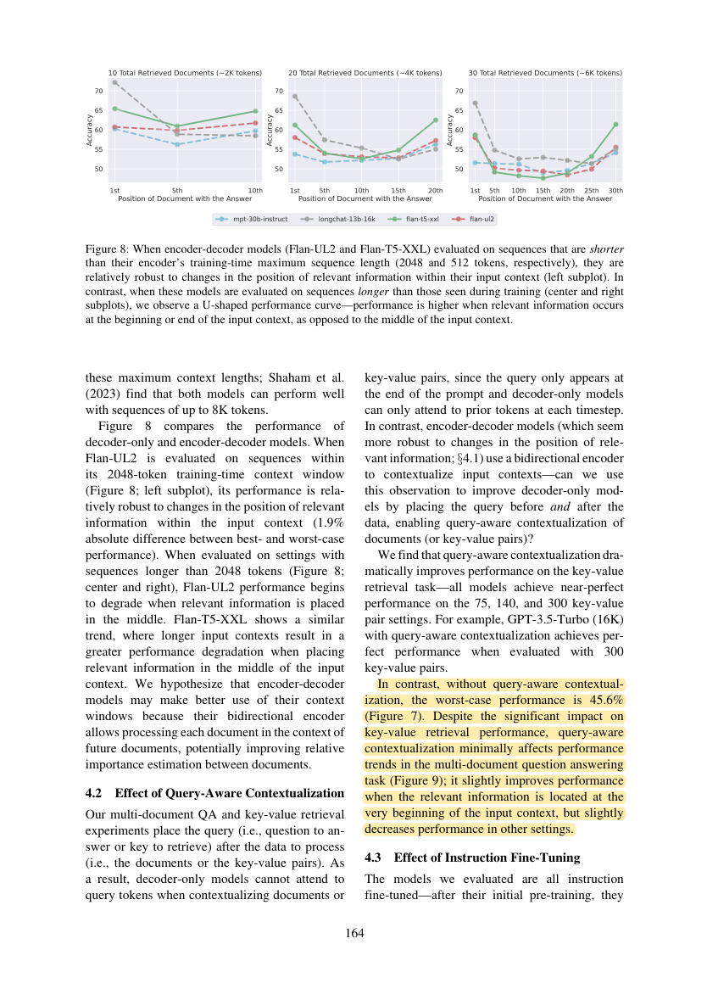

R36 · Full-text methods and results
Lost in the Middle: How Language Models Use Long Contexts
Transactions of the Association for Computational Linguistics (TACL) · 2024
Nelson F. Liu, Kevin Lin, John Hewitt, Ashwin Paranjape, Michele Bevilacqua, Fabio Petroni, Percy Liang
The authors controlled evidence position and input length. Some models used evidence less reliably when it appeared in the middle; accepting a larger window did not automatically improve evidence use.
Research question
Does adding distractors or moving the answer change performance when the answer and task remain the same?
Putting information inside the window is different from using it reliably. For DualGraph-OSCE, this motivates checking how evidence is found and applied, rather than treating successful input submission as sufficient validation.
Design, comparisons, and interpretation
- Document QA used 2,655 NaturalQuestions queries. An answer-bearing passage was combined with relevant answer-free passages retrieved by Contriever; the experiment controlled sets of 10, 20, or 30 documents and the answer position.
- Comparisons included closed-book answering without documents and an oracle containing only the answer document. Appendix analyses changed distractors, randomized order, and used an unambiguous subset.
- A minimal retrieval task used random UUID key–value pairs in JSON: 75, 140, or 300 pairs, with 500 examples per configuration and controlled target-key positions.
- Main models included MPT-30B-Instruct, LongChat-13B, GPT-3.5-0613, and the Claude-1.3 family. Generation was greedy, and accuracy depended on whether the correct answer appeared.
- Mechanism analyses also compared encoder–decoder models, training lengths, base versus instruction-tuned models, and prompts repeating the question before and after the context.
These findings come from the source tasks and comparisons. Their relevance to pharmacy OSCE must be tested in our four stations.
Results and scope
- Section 2.3/Figure 5: GPT-3.5 performance could vary by more than 20 percentage points with evidence position. Some 20- or 30-document configurations scored below its 56.1% closed-book result.
- Section 4.2: repeating the question before and after the context substantially improved UUID retrieval but did not consistently improve document QA. Prompt effects were task-dependent.
The models, tasks, samples, and scoring procedures do not define a universal long-context error rate.
Relevance to DualGraph-OSCE
The paper motivates examining access to dispersed OSCE evidence and robustness to evidence position.
Study design implications
Preserve dialogue order while checking whether relevant evidence is accessible. Record omissions and incorrect citations, rather than only demonstrating that the model accepts the input.
Claims this source does not support
- That current models must deteriorate at the same length.
- That a CUHK station exceeds the deployed model’s context window.
- That graph representation or shorter text necessarily improves grading.
See its role in the DualGraph-OSCE method →Use in the manuscript
Introduction: motivate reliable evidence use
Document-QA studies show that evidence position can affect evidence use even when the input fits within the context window [R36].
Methods: explain the validation design
Following position-controlled evaluation, we propose comparing evidence use from full input with item-linked evidence packages [R36]. This comparison has not yet been conducted.
Discussion: state the limits
The study uses older models and document-QA tasks; its effect sizes cannot be directly converted into pharmacy grading error rates [R36].
The citation supports prior methods and findings. Any advantage of DualGraph-OSCE must be demonstrated by our own controlled comparison.
Original article and precise source locations
Reviewed version: the published TACL article. Its PDF contains Appendices A–E; arXiv v3 includes an additional token-statistics appendix. This reading does not quote those additional statistics and uses the journal PDF as the source and marked-copy master.
| Source location | Physical PDF page | Content |
|---|
| §2.1–2.3；Figure5；Table1 | 3, 4, 5, 6 | Main experiment, position effects, and oracle comparisons |
| §3.1–3.2；Figure7 | 6, 7 | UUID key–value retrieval |
| §4.2；Figure9 | 8, 9 | Task-dependent effects of repeating the question before and after context |
Magnitude of the position effect
Source: §2.3; physical PDF page 6. Yellow marks identify the cited passage. These are source findings, not DualGraph-OSCE results.

R36-E2Accepting a longer window versus using its content reliably
Source: §2.3; physical PDF page 6. Yellow marks identify the cited passage. These are source findings, not DualGraph-OSCE results.
 R36-E3
R36-E3Prompt variations and retrieval comparisons
Source: §4.2; physical PDF page 8. Yellow marks identify the cited passage. These are source findings, not DualGraph-OSCE results.
